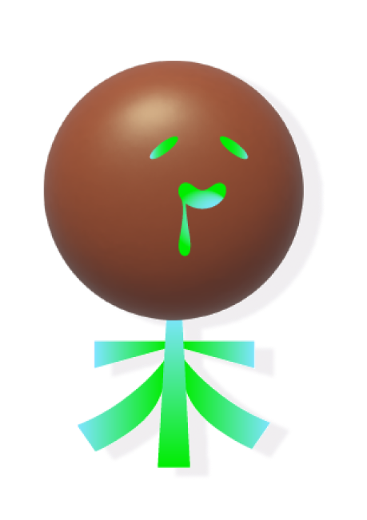
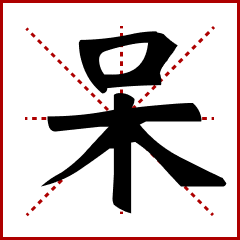

Congrats! You created your first Hanzi!


Dull
Isn’t it interesting that “呆” look like a woody person sitting on the tree?
Also, as you might noticed, the grid that the hanzi sit on is crucial for Chinese writing system!
It holds Hanzi in different kinds of structures. For example, “呆” is top-bottom structure, where the
“口” (mouth) sits on the top half of grid, and the “木” (wood) sits at the bottom half!